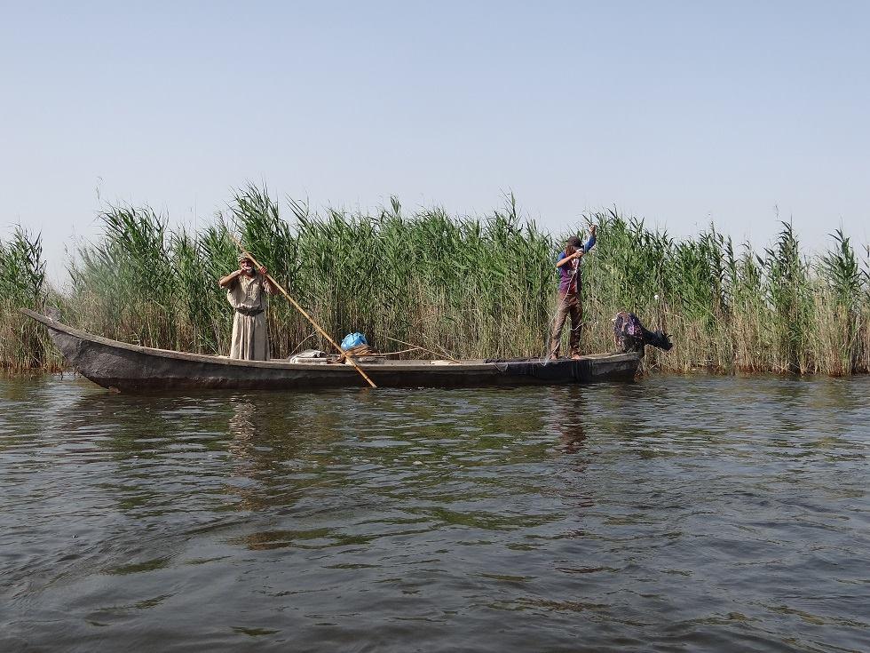
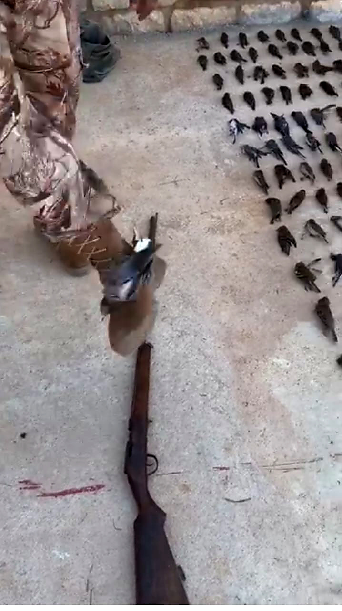
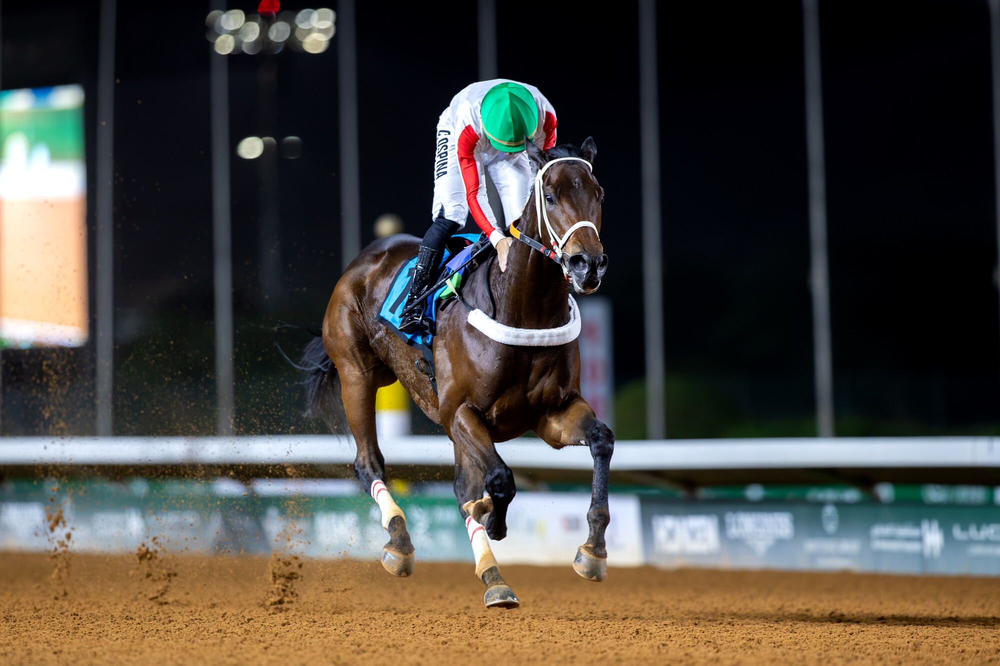
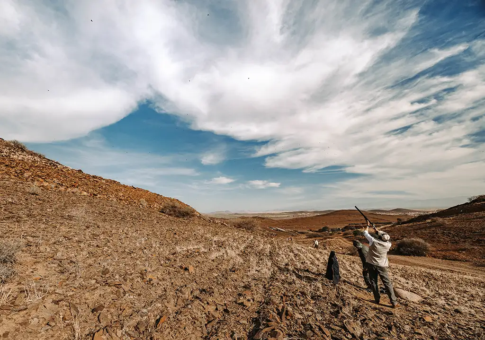
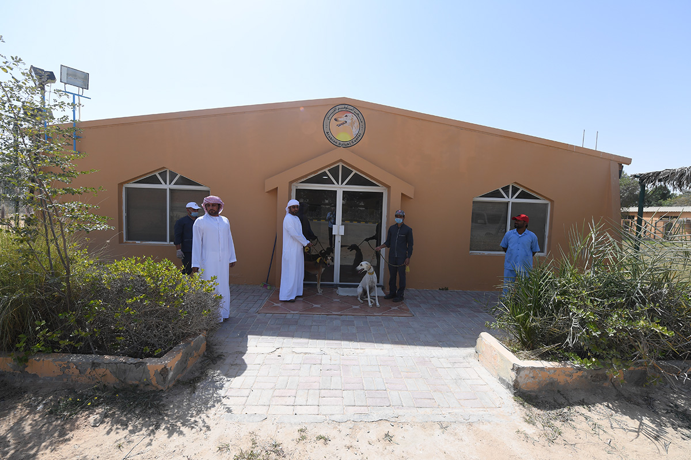
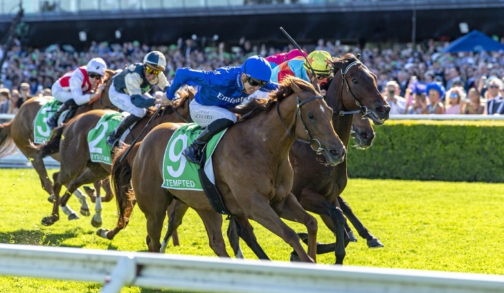
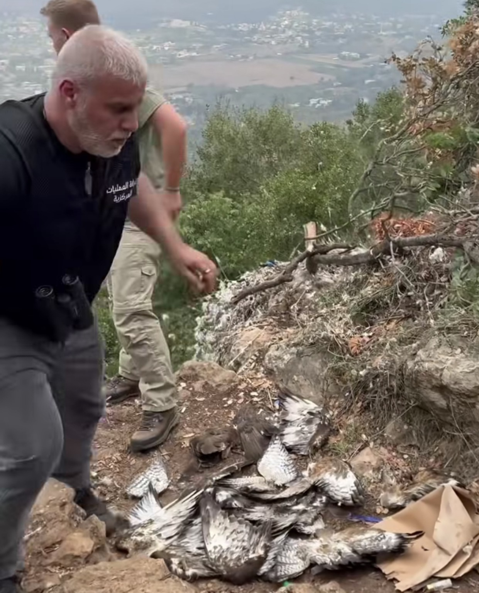
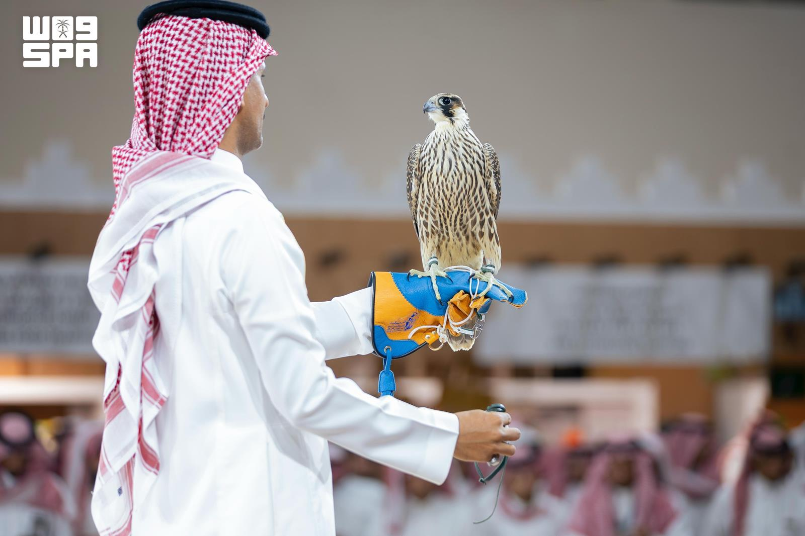

Le tourisme cynégétique en Égypte, en Irak et en Jordanie
Services locaux, coût d’organisation des séjours et fauconnerie à Burqu : trois façons d’examiner la contribution possible du tourisme cynégétique au développement.
39 articles

Services locaux, coût d’organisation des séjours et fauconnerie à Burqu : trois façons d’examiner la contribution possible du tourisme cynégétique au développement.

Le respect du gibier est la véritable épreuve de l’éthique du chasseur

Le cheval élevé en Arabie saoudite domine la finale sur 2 000 mètres, tandis que Camilio Ospina signe un triplé à l’hippodrome du roi Abdelaziz.

Des agences de voyages européennes aux hébergements, aux guides et aux équipes locales : comment les séjours de chasse génèrent-ils des services et des revenus au Maroc et en Tunisie ? Et de quoi l’Algérie a-t-elle besoin pour développer son offre touristique dans ce domaine ?

Fondé à Abou Dhabi en 2001, le centre associe soins et entraînement des salukis à la préservation des lignées arabes d’origine.

Des campements dans le nord de l’Arabie saoudite, des faucons et des lévriers salukis à Al Dhafra, une chasse liée à un complexe hôtelier à Al Ain, du gibier provenant d’élevages qataris. Derrière ces séjours se déploient des services d’hébergement, d’accompagnement, de transport et d’élevage. Les connaissances et les métiers des habitants du désert trouvent ainsi leur place dans une offre touristique, avec ses visiteurs et ses réservations.

Les retraits de filets dans le nord de la Bekaa et du Liban totalisent 63 030 mètres carrés.

L’Emirates Falconers’ Club et le Centre du saluki arabe d’Abou Dhabi organiseront la première saison à Al Ain et Al Dhafra, de novembre 2026 à avril 2027.

La pouliche australienne inverse le résultat de 2025 face à Ka Ying Rising. Flemington et Randwick figurent parmi les options à l’étude.

Un épervier dissimulé au Liban, deux oisillons qui révèlent une affaire en Espagne, et des chardonnerets interceptés avant la traversée de la Méditerranée. Ces faits distincts relancent la question de la protection des oiseaux, tandis qu’une affaire de faux documents suit son cours judiciaire et que la Tunisie accueille une rencontre consacrée à la lutte contre le commerce illégal.

L’hippodrome du roi Abdelaziz accueille la saison 2026–2027, dotée de 236,3 millions de riyals au total, avec deux nouvelles séries de courses.

Le chasseur professionnel se reconnaît à son expérience, à sa conduite et à son respect de la nature. Il connaît bien sa valeur et n’a pas besoin d’exhiber des cadavres d’oiseaux pour convaincre les autres de son habileté.

Une surveillance menée par CABS avec MECSHAP et les forces de sécurité libanaises a abouti à la saisie d’armes et à la documentation de tirs visant quatre bondrées apivores.

Des organisations européennes rappellent une estimation de 11 à 36 millions d’oiseaux par an et appellent à renforcer la protection des voies migratoires.

Entre surveillance des voies migratoires et documentation des infractions, Alexandra, bénévole de CABS, raconte son expérience de terrain au Liban et en Europe, ainsi que la patience, les risques et la coopération nécessaires à la protection des oiseaux. Elle explique aussi pourquoi elle distingue les chasseurs responsables des personnes qui enfreignent la loi.

Douze manches et 723 000 riyals de prix à Malham ; Al-Mansouri et Al-Qahtani remportent les deux manches finales.

Les principaux refuges migratoires du Machrek et de la péninsule Arabique

Le détachement d’investigation de la Bekaa et APU–CABS retirent des filets illégaux dans le nord de la Bekaa, portant le bilan total de la campagne à 38 280 mètres carrés.

Le triangle Liban–Chypre–Égypte : estuaires, salines, lacs et ports dans la protection des habitats des oiseaux.
Courses Al-Melwah, enchères de faucons mongols et technologies de surveillance et de protection côtoient équipements de chasse et de tir et patrimoine maritime à Malham, au nord de Riyad.

Dix jours réunissent fauconnerie, chasse, voyages et aventure, permettant aux visiteurs de découvrir un patrimoine vivant transmis de génération en génération.

Du fusil à l’objectif : comment le journalisme peut protéger les oiseaux migrateurs et transformer la culture de l’exhibition des prises.